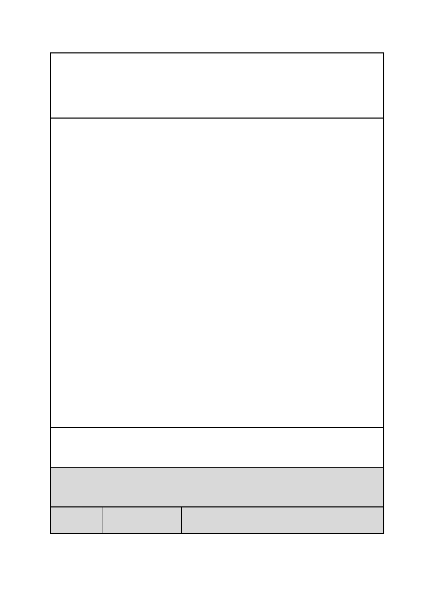

臺北市都市計畫委員會 公民或團體陳情意見綜理表
案
名
市府
回應
委員
會議
決議
編
號
「變更臺北市信義區逸仙段二小段 33 地號等 21 筆土地（原臺北機廠）
工業區為創意文化專用區、特定專用區、道路及綠地用地主要計畫案」
及「擬定臺北市信義區逸仙段二小段 33 地號等 21 筆土地（原臺北機
廠）創意文化專用區、特定專用區、道路及綠地用地細部計畫暨劃定
都市更新地區計畫案」
場使用，澡堂之展覽應以鐵道或勞工文化展示與教育為主；露天吊車
及遷車台之空地亦可作為前述空間租借之標的，並可參考華山文創園
區之藝術大街或松山文創園區之文創大街之做法，或如西門紅樓旁文
創市集之利用。目前尚未指定為古蹟之木模間應其儲藏大量重要文
物，應完整保存建物及其所藏文物，與古蹟保存區之鐵道文化園區啟
相輔相成之作用。
三、創意文化專用區（二）
此區緊鄰臺北文化體育園區及市民高架道路，面積較小，以延續鐵道
產業遺產文化園區之藝文氣圍，提供支援性功能為主，大致上與創意
文化專用區（一）相似。
四、特定專用區（一）
位於計畫區西側街廓，緊鄰臺北文化體育園區及兩座市民高架道路
間，且基地上分布原臺北機廠的火車進出場動線（扇形鐵軌紋理），
劃設為「特定專用區（一）」，以延續臺北文化體育園區之商業與藝文
氛圍，提供支援性功能為主。高樓層則提供商務辦公、社區休閒、購
物娛樂等功能；地面層透過挑高方式保留地面鐵道，但不宜因於鐵軌
間大量鋪設地磚等景觀設計造成地面鐵道景觀變遷劇烈，喪失保留鐵
道氣圍之目標。
五、特定專用區（二）
市民大道高架道路及基隆路一段 102 巷之間三角形街廓，由於鄰近松
山高中及南側住宅社區，劃設為「特定專用區（二）」，以提供住宅使
用為主。
兩特定專用區之開發應重視開放空間綠地之保留，以利鐵道產業遺產
文化園區與臺北文化體育園區及周圍社區之景觀融合。
本計畫已重新考量園區規劃的完整性、鐵道文化資產的保存、及與臺
北文化體育園區的銜接，調整主要計畫及細部計畫內容詳如編號 35
市府回應說明四。
內容同編號 1。
45 陳情人
陳○彥
第 51 頁/共 154 頁